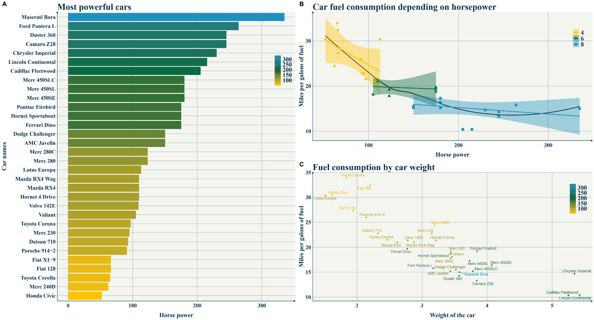

Introducing theme_qwen() The ggplot2 theme function that you can use
By Quentin Andres
Hello everyone,
In this post I wish to share with you a function that introduces a theme for a more appealing design of all the objects and graphs made with the package ggplot2 on R. The package ggplot2 is very useful for displaying the data contained in .csv files or data tables into a beautiful graphic/plot that is easier to understand for us human, than raw numbers.
Displaying the data correctly is essential, and appropriate graph for the correct data types will benefit the readers and anyone who look at our graph.
In this post, I will not talk about the ways to visualize data, but rather explain how can we make our ggplot2 graphs/plots more beautiful.
1. Installing ggplot2
On the R studio interface, in the console (bottom left panel), you can type the following lines:
install.packages("ggplot2") #install the package
library(ggplot2) #start the package on the session
2. Loading the theme function() in the R environment
In order to access to use the function, you can load it into the environment using the following code:
(I might create a package for the theme in a near future)
3. using the theme on your graphs
To use it on any ggplot, once the function is loaded, you can add the following argument to your ggplot
ggplot() + theme_qwen()
If you wish to edit the look of the theme, I advise that for you add for each graph your customs theme arguments After +theme_qwen()
For instance if you want to change the size from 26 to 22 for the plot title:
ggplot() + theme_qwen() + theme(plot.title = element_text(size=22))
4. Adding colors
If you add a color=X or fill=Y in the aesthetics aes of a plot, you can control the colors of those two using:
- +Scale_fill_manual(values = color_palette_name )
- +scale_color_manual(values = color_palette_name )
For qwen_theme, I like those tricolor palettes:
- Yellow Green Blue
colorsYGB <- c("#FFC300", "#006837", "#1D91C0" )
Full showcase:
- Blue Yellow Red (+light alternative)
colors_fr <- c("#0c2461", "#e58e26", "#b71540")
- Blue Yellow Red (light)
colors_fr_light <- c("#205072", "#E9765B", "#b71540")
Enjoy!
- Posted on:
- June 13, 2021
- Length:
- 2 minute read, 342 words